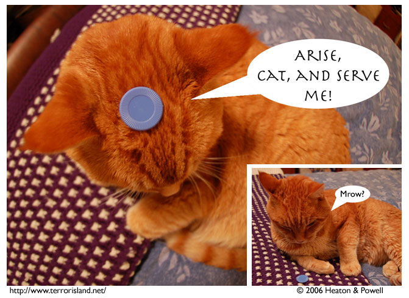

Strip #74
— Friday, December 1, 2006
The name of the Demon is Demon-Jame, but that’s just a coincidence.
Notes, Thoughts, &c.
Ben’s Notes
I had more trouble than usual getting Omicron to pose for this strip. Cats have many advantages for photocomic-making, but willingness to follow instructions isn’t one of them.
Lewis’s Notes
If anyone knows why we got a number of hits originating at games.slashdot.org, please let me know. I am curious.